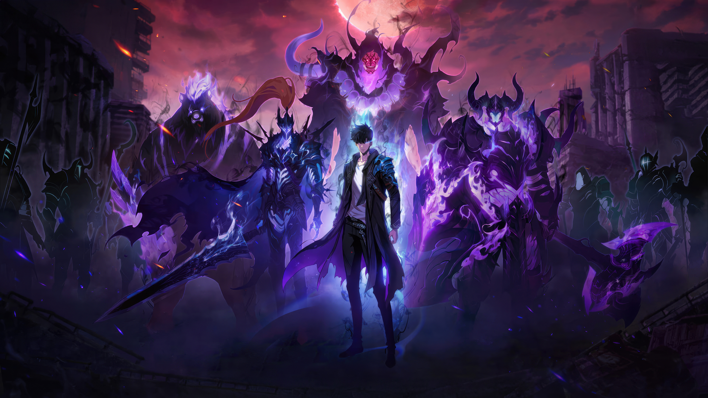
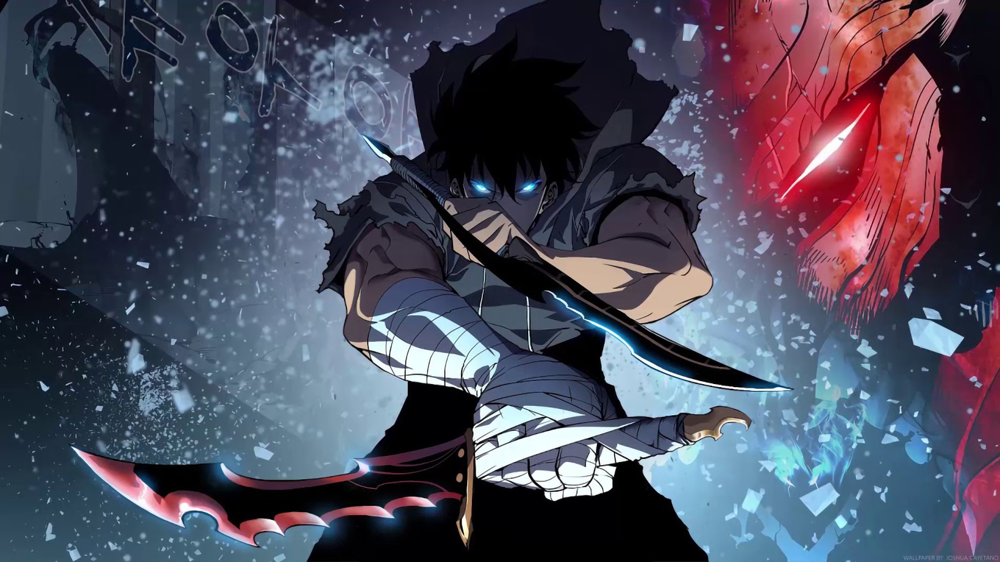

O Sistema Escolheu Seu Novo Monarca

Solo Leveling é a adaptação em anime da famosa webtoon sul-coreana, produzida pelo estúdio A-1 Pictures e lançada em 2024 como um dos maiores sucessos recentes.
A história se passa em um mundo onde portais repletos de monstros conectam a Terra a masmorras mortais, combatidas por humanos com poderes especiais chamados Caçadores. O protagonista é Sung Jin-Woo, o Caçador mais fraco do mundo, que arrisca a vida para sustentar sua família.
Sua sorte muda ao sobreviver a uma armadilha em uma dungeon mortal. Ele desperta o Sistema, uma interface no estilo RPG invisível aos outros que é a única no mundo capaz de fazê-lo subir de nível e aumentar seu poder constantemente.
Com animação fluida e trilha sonora de Hiroyuki Sawano, a trama acompanha a evolução de Jin-Woo, que aprende a ressuscitar os mortos como seu próprio exército de sombras e se torna o maior protetor da humanidade.
"O abismo não me assusta mais. Agora, o abismo sou eu."
Sung Jin-Woo
"Absolute power, in the shadow
I will standard
No look back, no turn back,
I walk in the darkness"
Sawano Hiroyuki - Dark Aria

Você pode entender mais sobre o anime Clicando aqui